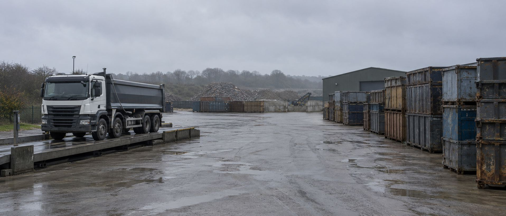

Take the modules you need.
Not the ones you don't.
weighzIO® is operations software for skip hire, waste and aggregates, sold module by module. No mandatory core, and the price per module drops the more you run.
Sixteen modules. Pick yours.
Every module works on its own. Nothing is bundled, nothing is compulsory, and nothing has to be bought to unlock something else.
Find out more about any module
Live weight capture straight off your indicator, onto the ticket.
Skip Hire & RoRoSkips, exchanges, hire terms, container tracking and digital waste tracking.
Materials & AggregatesMaterial orders, haulage, disposal routes and automatic load splitting.
Scheduling & DispatchDrag-and-drop planning boards that hold thousands of live tickets.
Accounts, sites, bespoke rates and credit control.
Finance & PaymentsInvoicing, VAT, recurring billing and background posting to Sage.
Reporting & DashboardsOperational, financial and compliance reporting.
Customer PortalSelf-serve ordering, ticket history and site reports for your customers.
Multi-CompanySeparate entities with their own VAT, ledgers and branding under one login.
Marketing Data FeedJob and enquiry data fed back into your Google and Meta campaigns.
You pay for what you run
Each module is priced on its own. Take one and that's all you pay for. Take several and the rate per module drops. There is no minimum bundle and no core licence sitting underneath.
| Modules taken | Discount |
|---|---|
| 1 to 3 | [PLACEHOLDER] |
| 4 to 8 | [PLACEHOLDER] |
| 9 or more | [PLACEHOLDER] |
Every operation prices differently depending on sites, vehicles and users, so we quote rather than publish a list. Tell us which modules you're interested in and we'll put a figure in front of you.
Digital waste tracking, built into Skip Hire
The Digital Waste Tracking Regulations came into force on 1 October 2026 for sites that hold a permit or licence to receive waste, with carriers, brokers and dealers following in October 2027. Every load needs a structured record filed within two working days of arriving.
Our modules handle that.
-
What's in the load, recorded on the bridge.
Waste types as a percentage split, bulky items separately, contamination photos attached to the ticket.
-
EWC codes from the system, not from memory.
A full European Waste Catalogue register behind the product list, so records stay consistent whoever is on the weighbridge.
-
Filed to Defra automatically.
Each load is submitted to the Receipt of Waste API and the digital waste record number comes back onto the ticket.
-
Outlets checked before the tip.
Tip outlet licences and material-to-outlet rules, so a driver can't be sent somewhere that isn't licensed to take it.
-
Customer permits watched.
Carrier registration numbers and site licence expiry dates tracked against the account, with a warning before the job is booked.
Duty of care notes are produced digitally with the customer signing on the driver's phone. Hazardous waste consignment reports export in Environment Agency formats.
If you need something that doesn't exist yet, we'll build it
The sixteen modules cover how most waste and skip businesses run. They won't cover all of yours, because no two operations are the same.
- The fifteen standard modules cover how most waste and skip businesses run. They will not cover all of yours, because no two operations are the same.
- If you have a process that matters and no software handles it properly, we scope it, price it and build it as a module of your own.
- It sits alongside the standard modules, uses the same data, and it is yours.
- Custom modules are part of the offering, not a favour.
Know which adverts actually brought the work in
Most waste operators spend money on Google and Meta and have no idea which of it worked. The reporting stops at the enquiry and the enquiry is where the useful part starts.
weighzIO can feed completed job and enquiry data back into your campaigns, so your advertising is measured against jobs that were booked and paid for, not clicks and form fills. Budget follows the adverts that produce real work.
Answer every call. Book every skip.
A missed call during a busy afternoon, or one that comes in after the office has shut, is a booking that either waits until tomorrow or goes to a competitor.
weighzIO's AI voice agent answers immediately, books skips and collections against your real availability, quotes a price, and confirms it all by text - day or night.
Four steps
Tell us how you run.
Sites, vehicles, weighbridges, companies, what's working and what isn't.
Pick your modules.
We'll say plainly if a module won't earn its place.
Move over.
Customers, sites, outlets, historical invoices and every lookup table migrated and checked against the originals before cutover, with custom customer prices validated line by line.
Common questions
Can I really take just one module?
Yes. There is no core licence and no minimum bundle. If the weighbridge is all you need, that's all you pay for.
Can I add modules later?
Yes, and the discount recalculates when you do.
Will it work with the weighbridge I already have?
weighzIO reads standard RS232 weighbridge indicators over a local connection on site. Tell us what indicator you're running and we'll confirm before you commit to anything.
We run several companies. Does that work?
Take the Multi-Company module and each entity keeps its own VAT settings, ledger, registration numbers and invoice branding, under one login.
Do I need the Skip Hire module for digital waste tracking?
Yes. The tracking functionality lives inside Skip Hire.
How long does moving over take?
It depends on how many modules and how much history. We'll give you a realistic answer once we've seen your data, not before.
What if the regulations change?
Carriers, brokers and dealers come into scope in October 2027, with exemptions and green list waste in later phases. Keeping up with the API is our job, not yours.
Can you build something specific to us?
Yes. Custom modules are part of the offering, not a favour.
Start with what you need
Tell us which modules matter and we'll come back with a quote and an honest view of whether weighzIO is the right fit.
No cost, no commitment, and we'll tell you if you're better off where you are.
Every module, in detail
Each one is priced and sold on its own. Take the ones that fit.

Weighbridge
Live weight capture straight off your indicator, onto the ticket.
- Reads standard RS232 weighbridge indicators through a locally hosted connection on site, so weights arrive on the ticket as they are taken.
- Captures gross, tare and net on material loads, and the single recorded weight on a skip.
- Records where each weight came from, and flags the variance between what the customer requested and what was actually recorded.
- Manual override is available and logged, for the days the hardware misbehaves.
- Removes the re-typing step between the scale display and the ticket, which is where billing errors start.
Works alongside: Skip Hire & RoRo, Materials & Aggregates, Finance & Payments.

Skip Hire & RoRo
Skips, exchanges, hire terms, container tracking and digital waste tracking.
- Handles the full order range: delivery, exchange, collection, weigh and load, and reposition, each priced on its own terms.
- Hire periods with allowance days, expiry dates, rental day allowances and automatic over-tonnage charges.
- Every skip and RoRo tracked as a physical unit by serial number, across yards and customer sites, so you know where each container actually is.
- Load composition recorded on the bridge as a percentage split by waste type, with bulky items listed separately and contamination photos attached to the ticket.
- European Waste Catalogue codes assigned from a register behind the product list, so records stay consistent whoever is on the weighbridge.
- Tip outlet licences and material-to-outlet rules checked before the tip, so a driver cannot be sent somewhere unlicensed to take the material.
Digital waste tracking functionality lives in this module.

Materials & Aggregates
Material orders, haulage, disposal routes and automatic load splitting.
- Large orders split into legal delivery tickets automatically, so a 200 tonne order becomes ten tickets rather than ten phone calls.
- Haulage handled as a buy and sell line, with disposal routes, waiting time charges and site permits held against the order.
- Product records carry activity, product group, VAT code, tax code and nominal codes, so material margins survive contact with the accounts system.
- Levies configured as a third tax tier alongside VAT and customer tax, calculated per material and disposal route.
- Quantities spread across multiple delivery dates, with recurring orders supported.
Works alongside: Weighbridge, Scheduling & Dispatch, Fleet & Telematics.
Scheduling & Dispatch
Drag-and-drop planning boards that hold thousands of live tickets.
- Five distinct planning views covering skips, tippers, concrete, artics and bulk, each filtered to how that side of the operation actually runs.
- An unscheduled jobs dock, so dispatchers drag work onto a vehicle-by-day grid rather than rebuilding the day in their head.
- Job cards load lazily, so the board does not freeze when the ticket volume is heavy.
- Vehicles can be reassigned across group companies where one entity has capacity another needs.
- Scheduling for hire-based products, with jobs and products linked in both directions.
Works alongside: Driver App, Fleet & Telematics, Skip Hire & RoRo.

Driver App
Job cards, weights, load breakdowns and signatures from the cab.
- Skip and material tickets completed on the phone: weights, load breakdown and variances, without a paper docket.
- Delivery sites geofenced, so arrival, waiting time and departure are recorded rather than estimated.
- Digital duty of care notes produced on site with the customer signing on glass.
- Over-quantity variances calculated in the cab, with the surcharge worked out before the driver leaves.
- Payment links generated on site by SMS or WhatsApp for balances owing before discharge.
Concrete Specific: bullet content not yet supplied - needs the actual detail before this reads as finished copy rather than a placeholder.
- Drivers can switch company, so one person can complete jobs for any division in the group. Job status protected by biometric or PIN.
Works alongside: Scheduling & Dispatch, Skip Hire & RoRo, Weighbridge.
Fleet & Telematics
Live vehicle tracking and weight limits enforced before dispatch.
- Live GPS positions from the Driver App shown on the dispatch map, so you can see where drivers actually are.
- Vehicle records hold type, default load size, and maximum and tare weight limits.
- Product types validated against vehicle axle ratings before a ticket leaves dispatch, which is what keeps you out of DVSA overloading trouble.
- Part load tolerances, demurrage and waiting time thresholds, skip type suitability and driver sign-off all held per vehicle.
- Real-time capacity checked at the point the ticket is created rather than after the fact.
- Mobile device management across the fleet's handsets.
Works alongside: Scheduling & Dispatch, Driver App.
Customers & Pricing
Accounts, sites, bespoke rates and credit control.
- One customer account with many sites, each with its own contacts and geo-addressed location.
- Bespoke pricing per customer, applied automatically on every order and ticket, so nobody looks a rate up by hand and nobody issues a credit note to fix it.
- Live credit position checked during order entry, with the warning arriving while the customer is still on the phone.
- Waste carrier registration numbers and waste site licence expiry dates tracked against the account, with a warning before the job is booked.
- Customer lookups for SIC code, zone, business type, postal area, priority and site access times.
- Cash and invoice payment terms held separately, with a workflow to convert a cash customer to an account customer.
Works alongside: Finance & Payments, Skip Hire & RoRo.
Finance & Payments
Invoicing, VAT, recurring billing and background posting to Sage.
- Invoices and tickets post to Sage in the background, across every company you run, without anyone triggering a sync out of hours.
- Nominal codes mapped per product, per tip outlet and per company, so the general ledger posting is right first time.
- T21 domestic reverse charge VAT calculated automatically rather than corrected by hand.
- Recurring monthly billing generated and emailed as PDFs on a schedule.
- Credit notes run through a multi-tier approval workflow before they go anywhere.
- Annual contract price uplifts scheduled and applied across active accounts.
Works alongside: Customers & Pricing, Multi-Company, Reporting & Dashboards.
Reporting & Dashboards
Operational, financial and compliance reporting.
- Consolidated monthly and annual reporting across orders, waste streams and invoices.
- Reports generated as PDFs and dispatched by email on a schedule, so the recurring ones stop being a job.
- A management dashboard showing daily vehicle revenue, ticket margins and tonnage.
- Hazardous waste consignment reports exportable in Environment Agency formats.
Works alongside: Multi-Company, Finance & Payments, Customer Portal.
Customer Portal
Self-serve ordering, ticket history and site reports for your customers.
- Scheduled weekly and monthly reports emailed to customers automatically, which takes the recurring report requests off your phone lines.
- Site recycling reports delivered to key accounts without office involvement.
- Self-billing invoice workflows for contracted commercial partners.
Works alongside: Reporting & Dashboards, Finance & Payments.
Self-serve ordering appears on the module card but is not described in the functional spec. Confirm with the product manager before the copy claims it.
Multi-Company
Separate entities with their own VAT, ledgers and branding under one login.
- One login across every company in the group, with instant switching rather than logging in and out.
- A default organisation per user, so people land where they work.
- Company-specific VAT settings, legal registration numbers and financial rules held independently.
- Invoice templates, logos, remittance addresses and custom headers per company, so each entity invoices as itself.
- One master customer record shared across all entities, which removes the duplicate data entry and the inter-company notes.
Works alongside: Finance & Payments, Scheduling & Dispatch.
Marketing Data Feed
Job and enquiry data fed back into your Google and Meta campaigns.
- Completed job and enquiry data fed back into Google and Meta, so advertising is measured against work that was booked and paid for rather than clicks and form fills.
- Budget follows the campaigns producing real jobs.
Goes beyond the functional spec and needs sign-off. Before this goes live it needs a lawful basis, a data processing agreement between you and the operator, and disclosure in both privacy policies, because it involves processing the operator's customer data for advertising.

Ready-Mix Concrete
Concrete orders, batching schedules and delivery.
- Daily delivery tickets generated automatically for multi-load concrete orders.
- Concrete runs as one of the five dispatch planning views, filtered to how that side of the operation works.
Works alongside: Scheduling & Dispatch, Weighbridge.
Thin spec coverage: these are the only two concrete references in the functional spec. Detail beyond this is needed from the product manager. Do not add batching plant integration, mix designs or slump records, none of which appear in the spec.

Trade Waste
Route-based commercial collections.
- Recurring commercial collections scheduled by round, not booked as a one-off job each time.
- Bin and container sizes tracked per site, so a round doesn't turn up with the wrong lifting gear.
- Missed or refused lifts logged against the round, with the reason recorded rather than the job just marked complete.
- Contamination or overweight bins flagged on the round, with a surcharge applied automatically rather than raised later as a query.
- Recurring invoicing runs off the round itself, so commercial customers are billed for the collections that actually happened.
- Round changes, new sites, and holiday adjustments handled without rebuilding the whole schedule from scratch.
Works alongside: Scheduling & Dispatch, Customers & Pricing, Finance & Payments.

Hazardous Waste
Consignment tracking and Environment Agency reporting.
- Hazardous waste consignment reports exportable in Environment Agency standard formats.
- Consignments tracked per physical unit through the European Waste Catalogue register.
- Restricted outlets and material-to-outlet validation, so hazardous material cannot be routed somewhere unlicensed.
- Duty of care records produced digitally as part of the same movement.
Works alongside: Skip Hire & RoRo, Reporting & Dashboards.
Custom Modules
Something your operation needs that nobody has built yet.
If you have a process that matters to your business and no software handles it properly, we'll scope it, price it and build it as a module of your own. It sits alongside the standard modules, uses the same data, and it's yours.
Digital Waste Tracking Explained: What UK Waste Operators Must Do
Updated September 2026.
The short version
- England and Wales started on 1 October 2026. Scotland and Northern Ireland follow in January 2027. Carriers, brokers and dealers come in from October 2027.
- In scope first are sites that hold a permit or licence to receive waste.
- Every load needs a structured record: EWC code, SIC code, movement reference, origin, destination, quantity, treatment outcome and a persistent organic pollutants flag.
- It replaces the paper waste transfer note with a digital record filed to the national service.
Does this apply to me?
Do you hold a permit or licence to receive waste? Then you have been in scope since 1 October 2026.
Do you carry waste but not receive it at your own permitted site? Your date is October 2027, though receiving sites will be asking you for better data well before that.
Your permit is the document that settles it. Neither a software company nor a web page is the right place to decide your legal position, so read the permit and take advice on it if there is any doubt.
The dates in full
- England and Wales: 1 October 2026.
- Scotland and Northern Ireland: January 2027.
- Carriers, brokers and dealers: October 2027.
- Exemptions and green list waste: later phases.
What has to be recorded for every load
Every movement needs the same set of fields, whoever is on the weighbridge.
- EWC code for the material.
- SIC code for the producer.
- Movement reference.
- Origin of the waste.
- Destination it is going to.
- Quantity, as recorded at the bridge.
- Treatment outcome.
- Persistent organic pollutants flag, on every load.
Digital waste transfer notes: what changes
The paper transfer note is replaced by a digital record of the same movement. The duty does not change. The record does.
Day to day, the data that used to be written on a ticket in the cab has to be captured once, in fields rather than free text, and filed. Where the weighbridge and the driver's phone feed the same record, there is nothing extra for anyone to fill in and nothing to reconcile at month end.
Waste duty of care under the new regime
The duty of care is unchanged: you must know what the waste is, who produced it, who is moving it and where it is going, and you must be able to evidence it.
What evidences it is now the digital record rather than the carbon copy. Operators are still required to keep their own records, and the producer still confirms the description, the carrier confirms the movement and the receiving site confirms the weight and the treatment.
Hazardous waste consignment notes
Hazardous movements are consigned and reported separately from ordinary transfers, and the consignment detail sits alongside the movement record.
Consignment reports still export in Environment Agency formats, so the returns you send do not change shape even though the underlying record is now digital.
The two working day rule
Each load has to be recorded within two working days of arriving.
The load is not recorded until the system issues a digital waste record number. Until that number comes back, the movement is outstanding, whatever is sitting in your own system.
The two submission routes
There are two ways to file. The first is an API submission through your own software, which files each load as it is weighed and brings the record number back automatically.
The second is Defra's spreadsheet upload. It is a genuine route and it works, particularly for a yard doing low volumes or one that is not ready to change systems. It is also temporary, and it is manual, so every load is somebody's job twice.
What it costs
The service charges £26 a year per legal entity that creates or edits records.
What to do before your deadline
- Map an EWC code to every material you accept.
- Put permit and licence numbers for each site in one list, with expiry dates.
- Hold carrier registration for every vehicle, including subcontractors.
- Check your weighbridge calibration dates are current and recorded.
- Name one person as responsible for filing and for the monthly check that nothing is outstanding.
Official sources
weighzIO files these records automatically as part of the Skip Hire module.
Answer every call. Book every skip.
An AI voice agent for skip hire and waste operators. It answers the phone, books a skip, arranges a collection, and confirms a swap date - any time, without a queue.
The phone doesn't stop when the office does
Skip hire runs on the phone, and the phone doesn't keep office hours. A driver can't answer while he's out on a job. The yard's short-staffed on a Friday afternoon. Someone rings at half seven in the evening wanting a same-day collection, gets no answer, and books with whoever answers next.
Every missed call is a booking that either waits until tomorrow or goes to a competitor.
It answers, and it actually books the job
-
Answers immediately, day or night.
No hold music, no voicemail, no "we'll call you back."
-
Books against your real availability.
Not a generic script - it works from the same jobs and schedule your team already sees, so it isn't promising a Tuesday slot that's already full.
-
Arranges collections and swaps
Confirms the date and gets the address right without anyone having to repeat themselves twice.
-
Quotes a price for standard jobs on the spot.
Using your actual rates rather than a rough estimate someone has to correct later.
-
Confirms everything by text.
So the customer has it in writing and the office has a record without anyone typing it up.
The admin that piles up around every call
Answering the phone is the headline, but the same system picks up the work that usually falls through the cracks around it: capturing and qualifying enquiries so nothing sits unread, keeping customer records tidy without someone doing it by hand at the end of the day, and chasing quotes that never got a reply instead of them quietly going cold.
None of this touches advertising or ad spend - it's about what happens to a call or enquiry once it's already come in, not how it got there.
FAQ
Will it replace our office team?
No. It picks up what a small team can't always get to - the call at half seven, the one that comes in while everyone's on another line - so your team spends less time chasing and more time on the jobs that need a real person.
Does it work with our existing phone number?
Yes, it sits on the number you already advertise. Customers don't dial anything different.
Will it sound like a robot?
No. It's trained on your yard's actual processes, prices and tone, not a generic script read out loud.
What if a call genuinely needs a person?
It hands off - a complicated query, an angry customer, anything outside the ordinary goes straight to your team rather than the agent guessing.
Stop losing bookings to a missed call
Tell us about your setup and we'll talk you through what this looks like for your yard.
Tell us which modules you need
Seven questions. We'll come back within two working days with a quote and a straight answer on fit.
-
No cost, no commitment.
We'll tell you plainly if you're better off where you are.
-
A straight answer on fit.
We'll say if a module won't earn its place, not just sell you all of them.
-
Email or phone, Monday to Friday.
Office hours, and a reply within two working days either way.
Thank you for your enquiry.
We've received it and will be in touch within two working days.
In the meantime, the digital waste tracking guide is worth a read, or head back to the modules if there's anything else you want to look at.
Privacy and cookies
Draft for review. This notice was written to match what the enquiry form actually does and has not been through legal sign-off.
Who we are
weighzIO® is operations software for skip hire, waste and aggregates businesses. This notice covers the weighzIO website and the enquiry form on it.
What we collect
Only what you type into the enquiry form: your name, company, email address, phone number, which modules you are interested in, whether you receive waste at your own permitted site, how many vehicles you run, and anything you add in the free text box.
Why we collect it
To answer your enquiry and to price the modules you asked about. Nothing else. We do not sell your details, we do not pass them to anyone outside the business, and we do not add you to a marketing list off the back of an enquiry.
How long we keep it
For as long as the enquiry is live, and afterwards only where we need it to honour a quote or a contract. Ask us to delete it and we will.
Cookies
This site sets no analytics or advertising cookies unless you accept them. Non-essential cookies are declined by default, and declining changes nothing about how the site works. One small record of your choice is kept in your browser so you are not asked again.
Your rights
You can ask what we hold, ask for a copy, ask us to correct it or ask us to delete it. You can also complain to the Information Commissioner's Office.
Contact
Use the enquiry form and say it is about data protection, and it will reach the right person.